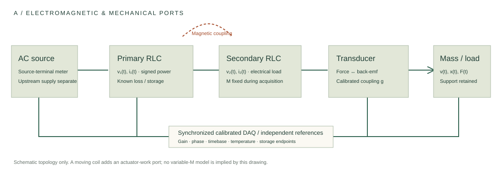
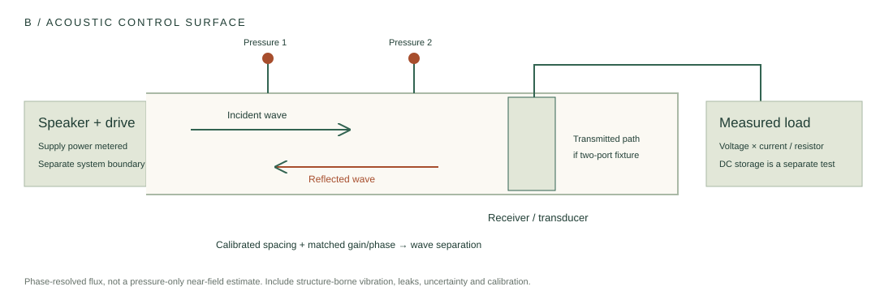

Make the anomaly
survive the controls.
Define the boundary, calibrate the channels, retain initial and final storage, and decide what would disprove the proposed mechanism.
The drawings define measurement relationships. They are not calibrated mechanical drawings, measured traces or an instruction to build high-energy equipment. The quantum lane is a software/state-analysis experiment.
Start with stationary coupling.

Measure
Synchronous signed v(t)i(t), mechanical F(t)v(t) where applicable, resistive output, losses and initial/final electrical and mechanical storage.
Challenge
Zero coupling, detuning, no drive with charged storage, resistive dummy, calibrated phase skew and complete startup/ringdown records.
Move carefully in the model
Changing mutual inductance requires Faraday terms and mechanical work. Translate, settle and acquire first. A variable-M substitution alone is not a valid energy model.
Measure the control surface.

Separate the boundaries
Receiver conversion uses net acoustic/mechanical input. Whole-system efficiency includes the speaker and amplifier supply. Adding both counts an internal transfer twice.
Capture the outgoing paths
Measure incident and reflected waves; include transmission for a two-port fixture. Absorption and electrical conversion are different outputs.
Use independent controls
Acoustically block an electrically active source, swap microphones, monitor structure-borne motion, sweep load and record source-off decay.
Close the accounting interval.
R = Eload + Eloss + Ufinal − Uinitial − Esource − Eenvironment
The uncertainty is supplied by the user, not inferred from these six entries. A covariance model uses u² = cᵀΣc. A chosen multiplier is not automatically a 95% confidence guarantee. Do not count internal dissipated heat again as outgoing heat or thermal storage.
WRONG-MODEL CONTROL
A small delay.
A large relative bias.
For the stated sinusoidal convention, Pmeasured = VI cos(φ + 2πfτ). Near quadrature, relative errors grow because true real power is small.
Example holds V = I = 1 RMS. Arbitrary waveforms require synchronous signed time-product integration.
REVERSE INFERENCE
A fit can hide
a whole family.
For this known linear model, scaling (m,b,k,g) by (a,a,a,√a) preserves the electrical impedance. A calibrated velocity channel changes by 1/√a.
Conditional on the stated model, known electrical parameters, nonzero coupling and no unmodeled force. Brute-force fitting cannot remove an exact nullspace.